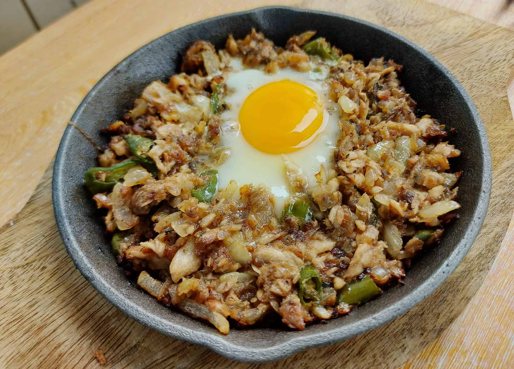

Sisig

Description
This sisig is seasoned with calamansi, onions, and chili. It is savory, tangy, and slightly spicy, with a mix of crispy and tender textures.
It is perfect with rice or served as a pulutan.
Ingredients
- 1kg Pork
- 500g Real Mayonnaise
- 3 tbsp Oyster Sauce
- 2 tbsp Liquid Seasoning
- 78g Liver Spread
- 4 tbsp Calamansi Juice
- 1 Whole White Onion
- 6 Cloves Garlic
- 200g Margarine
- A bit of Pepper
- A bit of Salt
- 3 pcs Siling Green
Steps
Pork
- Boil the meat in water with pepper, garlic, onion, and salt until tender
- Set aside and let it cool completely
- Fry over medium heat until golden brown
- Let it cool for at least 5 minutes, then fry again over high heat for 1 minute
Sauce
- In a bowl, mix oyster sauce, mayonnaise, calamansi juice, liquid seasoning, liver spread, and pepper. Set aside
- In a pan with oil and margarine, sauté garlic, onion, and green chili
- Add the sauce mixture and simmer for at least 3 minutes
- Add the meat and mix well